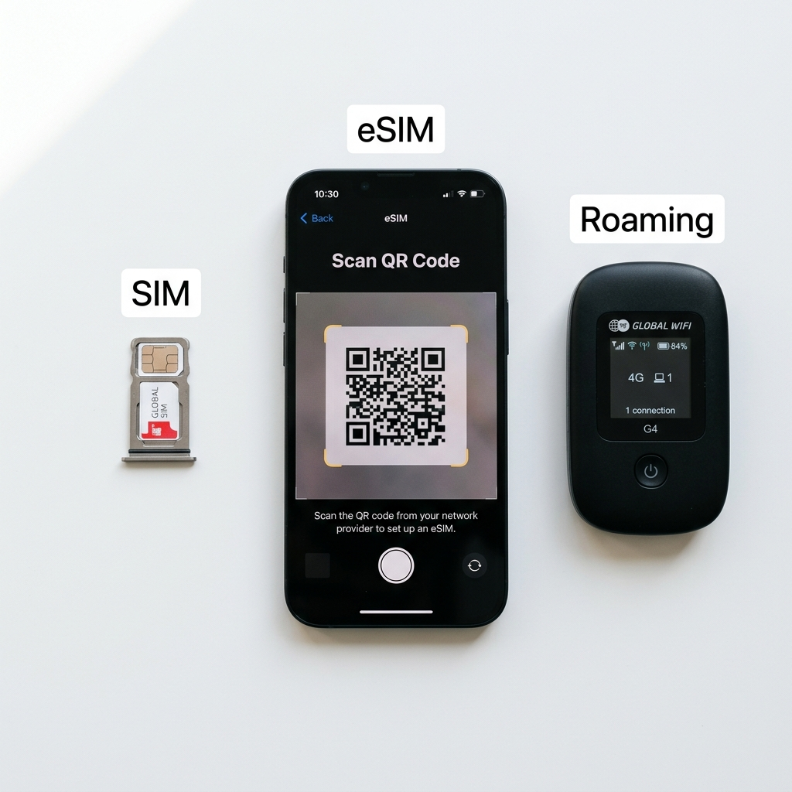
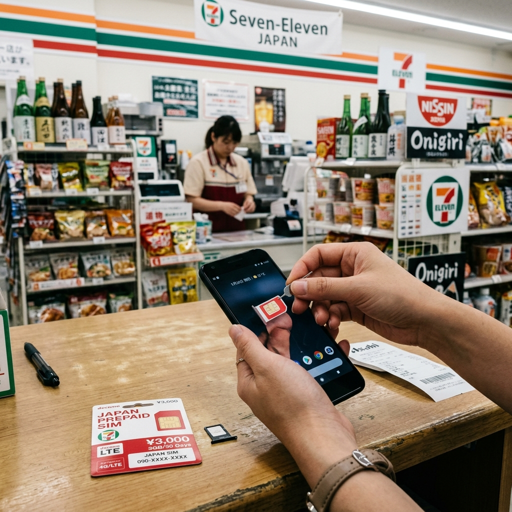
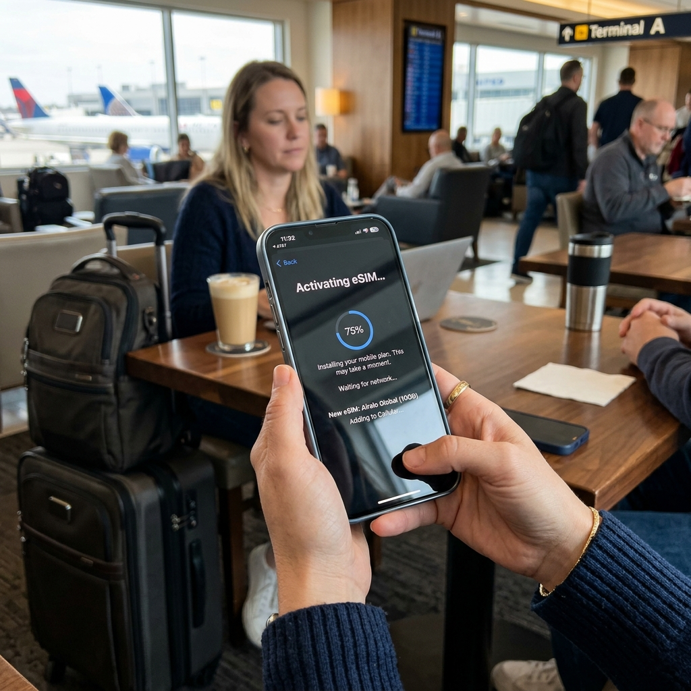

통신사 로밍이냐 eSIM이냐, 해외여행 데이터 요금 실제로 얼마나 차이 나나
지난 일본 여행에서 처음으로 eSIM을 써봤습니다.
그 전까지는 매번 통신사 로밍 요금제를 이용했는데, 7일 여행에 로밍 비용이 7~9만 원씩 나왔던 게 계속 마음에 걸렸습니다. 친구가 eSIM 썼더니 2만 원대에 해결됐다는 이야기를 듣고 직접 비교해 보기로 했습니다.
결과적으로 비용 차이가 꽤 컸습니다. 오늘은 로밍, 유심, eSIM 세 방법을 실제로 써본 경험 기반으로 솔직하게 비교해 드립니다.

해외 데이터 3가지 방법 — 유심, eSIM, 로밍 비교 / AI 제작 이미지
세 가지 방법, 각자 어떻게 작동하나
해외에서 데이터를 쓰는 방법은 크게 통신사 로밍, 현지 유심 교체, eSIM 세 가지입니다.
통신사 로밍은 국내 번호를 유지하면서 통신사 협약을 통해 현지 네트워크를 빌려 쓰는 방식입니다. 준비 과정이 없고 번호가 그대로 유지되지만 요금이 가장 비쌉니다.
현지 유심은 스마트폰의 SIM 카드를 현지 통신사 유심으로 교체하는 방법입니다. 현지 번호로 바뀌어 국내 번호로 전화·문자 수신이 안 됩니다. 저렴하고 속도가 빠르지만 현지 공항에서 구매해야 하는 번거로움이 있습니다.
eSIM은 스마트폰에 내장된 가상 SIM 기능을 이용해 앱이나 QR코드로 해외 통신 프로파일을 내려받는 방식입니다. 출국 전에 미리 설치 가능하고, 국내 유심과 병행 사용하면 기존 번호도 유지할 수 있습니다.
실제 비용 차이 — 로밍 vs eSIM 7일 일본 비교
✍️ 직접 비교해보니
제가 써본 통신사 로밍(SKT baro 7일 요금제)은 49,000원이었습니다. 데이터 5GB 고속 후 저속 전환 구조였고, 일주일 여행에서 고속 데이터는 4일 차에 소진됐습니다.
eSIM은 Airalo에서 일본 7일 3GB 상품을 약 22,000원에 구매했습니다. 처음에는 용량이 부족할까 걱정했는데, 숙소에서 Wi-Fi를 사용하고 이동 중에만 데이터를 쓰니 7일간 2.3GB 정도 사용했습니다. 남은 700MB는 낭비됐지만 그래도 49,000원 대비 22,000원이니 절반 이하 비용이었습니다.
| 구분 |
비용 (7일 일본 기준) |
데이터 |
| 통신사 로밍 |
49,000~79,000원 |
5GB~20GB 고속 |
| 현지 유심 |
15,000~28,000원 |
무제한 또는 15GB+ |
| eSIM |
15,000~25,000원 |
3GB~무제한 |
eSIM 설치 과정 — 생각보다 간단했습니다
eSIM이 어려울 것 같아서 미뤄왔는데 실제로는 훨씬 간단했습니다.
Airalo 앱을 설치하고 회원가입 후, 일본 상품을 선택해 결제하면 QR코드가 발급됩니다. 스마트폰 설정 → 셀룰러(또는 모바일 네트워크) → eSIM 추가에서 해당 QR코드를 카메라로 스캔하면 프로파일이 내려받아집니다.
전체 과정이 5~10분 이내였습니다. 설치 후 현지 도착할 때까지 eSIM 데이터를 OFF로 두었다가 공항에 내리자마자 ON으로 전환하니 바로 터졌습니다. 국내 유심은 그대로 꽂혀 있어서 카카오톡 알림과 국내 전화 수신도 동시에 됐습니다.
eSIM을 사용하려면 기기가 eSIM을 지원해야 합니다. 아이폰 XS 이후 모델, 갤럭시 S20 이후 모델 대부분이 지원하지만, 국내 통신사 전용 단말기 중 일부는 eSIM 기능이 비활성화된 경우도 있으니 사전에 확인이 필요합니다.

일본 공항 편의점에서 현지 유심을 구매해 장착하는 모습 / AI 제작 이미지
현지 유심이 더 나은 경우
eSIM이 만능은 아닙니다. 현지 유심이 더 유리한 상황도 있습니다.
10일 이상 장기 여행: 현지 유심 무제한 요금제를 사용하면 eSIM보다 용량 대비 비용이 저렴한 경우가 많습니다.
동남아 여행: 태국, 베트남, 필리핀 등은 공항에서 바로 저렴한 유심을 살 수 있어 현지 유심이 훨씬 경제적입니다. eSIM 상품 자체가 선택지가 적기도 합니다.
eSIM 미지원 기기: 구형 스마트폰이거나 eSIM이 비활성화된 단말기라면 현지 유심이 대안입니다.
현지 유심의 단점은 국내 번호를 쓸 수 없다는 점입니다. 특히 은행·카드사 OTP 문자나 중요 인증이 필요한 상황이 예상된다면 eSIM 쪽이 안전합니다.
로밍이 여전히 나은 경우
로밍이 비싸도 선택해야 할 상황이 있습니다.
2일 이내 단기 출장: 준비 과정 없이 번호가 유지되는 로밍이 단기 출장에는 가장 편합니다. 일일 로밍 2일치면 비용도 2~4만 원 수준이라 eSIM이나 유심을 준비하는 번거로움과 큰 차이가 없습니다.
업무용 전화 수신이 많을 때: 국내 번호로 전화 수신이 잦은 출장이라면 국내 번호가 유지되는 로밍이 필요합니다. eSIM 듀얼심 방식으로도 가능하지만, 데이터는 eSIM, 통화는 기존 유심 전환을 수동으로 해야 하는 불편함이 있습니다.
로밍 요금 폭탄을 피하는 방법
로밍 요금제에 가입하지 않고 해외에서 데이터를 쓰면 MB 단위로 요금이 청구되어 수십만 원이 나올 수 있습니다. 반드시 주의해야 합니다.
핵심은 두 가지입니다. 로밍 요금제에 가입하거나, 아니면 데이터 로밍을 완전히 꺼두는 것입니다. 설정 → 셀룰러(또는 모바일 네트워크) → 데이터 로밍 OFF 설정을 출국 전에 반드시 확인하세요.
eSIM·유심을 사용하는 경우에도 기존 국내 통신사 유심의 데이터 로밍이 켜져 있으면 이중 과금이 발생할 수 있습니다. eSIM 데이터를 사용할 때는 기존 유심 데이터는 반드시 OFF로 유지하세요.

eSIM QR코드를 스캔해 해외 데이터 프로파일을 설치하는 모습 / AI 제작 이미지
나라별 추천 정리
| 여행지 |
추천 방법 |
| 일본 |
eSIM (Airalo·Nomad 등 다양, 공항 유심도 편리) |
| 태국·베트남 |
현지 유심 (공항 구매 쉽고 가격 저렴) |
| 유럽 다국가 |
eSIM (EU 광역 요금제 단일 eSIM으로 해결) |
| 미국 |
eSIM 또는 현지 유심 (T-Mobile·AT&T 공항 구매 가능) |
| 2일 이하 출장 |
로밍 (준비 없이 바로 가능) |
📝 작성자 메모
처음 eSIM을 써본 일본 여행에서 가장 놀랐던 건 공항에 내리자마자 바로 터지는 경험이었습니다. 유심 교체할 필요도 없고, 줄 설 필요도 없이 공항을 나오는 순간 이미 인터넷이 됐습니다.
비용도 절반 이하였고, 국내 번호도 유지됐습니다. 이미 eSIM 지원 기기를 사용하고 계신다면 한 번쯤 도전해 보시길 강하게 추천드립니다.
#eSIM후기
#해외데이터비교
#로밍vs유심
#일본여행데이터
#eSIM설치방법
#해외여행필수준비
#통신사로밍비교
#Airalo추천
#여름해외여행팁
#현지유심구매